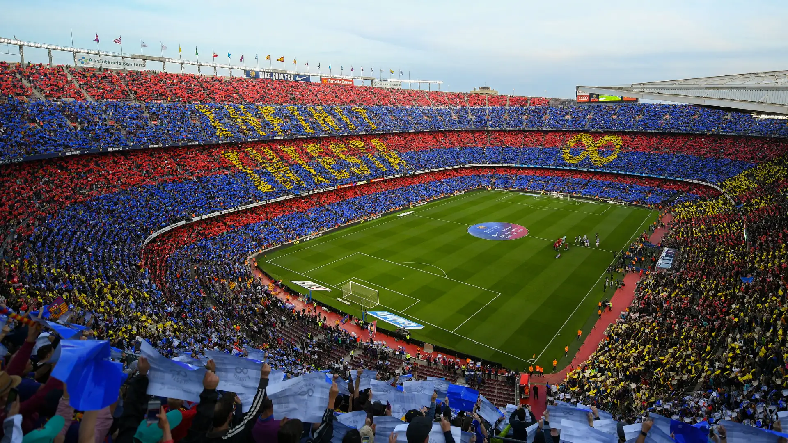

Népszerű klubok

Real Madrid
A Real Madrid spanyol futballklub, amely Madridban található. A klub sok sikeres játékost adott a futballvilágnak.
FC Barcelona
Az FC Barcelona egy híres spanyol klub. Hagyományosan a támadó futballjáról ismert.
Manchester United
Az angol Manchester United az egyik legismertebb klub a Premier League-ben.